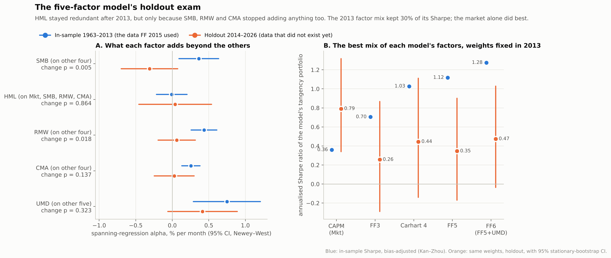
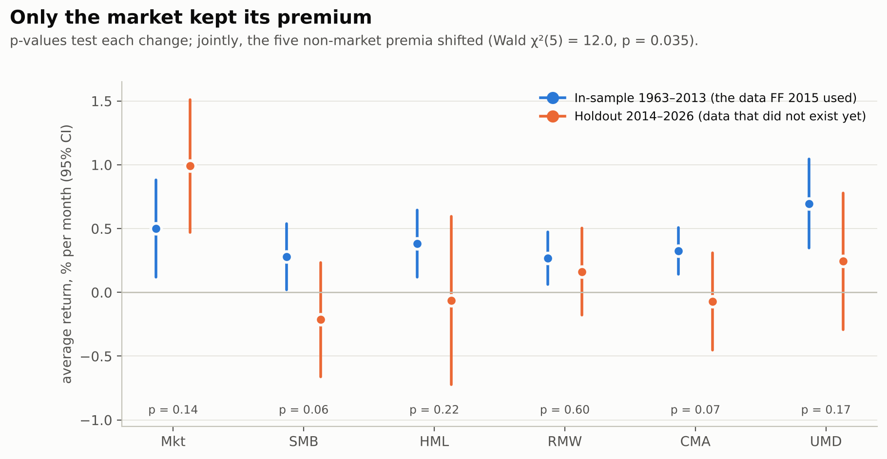
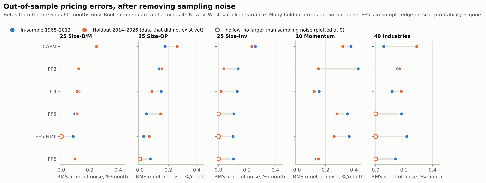
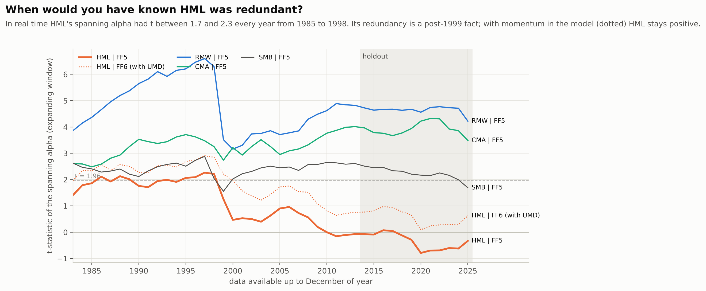
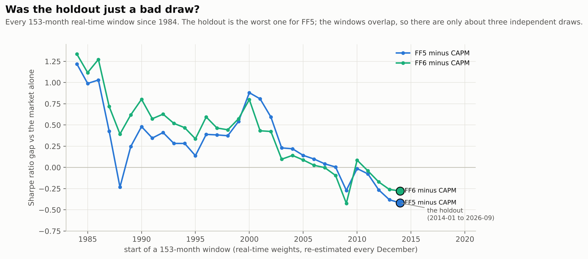
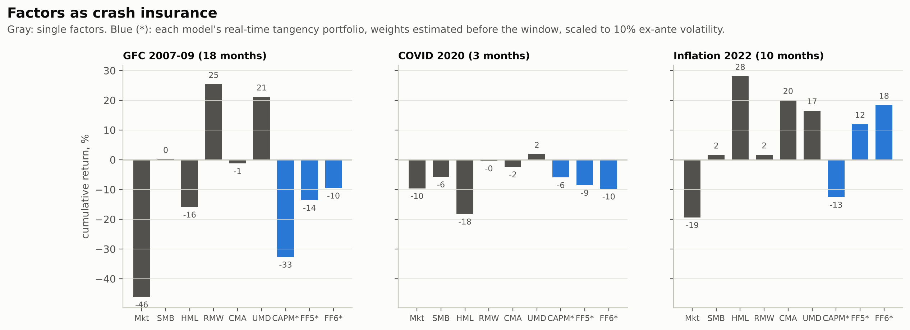

Working paper · Project 17
Thirteen years of returns that did not exist when Fama and French chose their model: does the verdict survive?
Project 17 of 30 Quant Research Projects · Working paper, November 2026

Fama and French (2015) chose their five-factor model, and declared the value factor HML redundant, using US stock returns from July 1963 to December 2013. Every later comparison of factor models re-uses those same fifty years. This project treats the 153 months since then (January 2014 to September 2026) as what they are: a true holdout that nobody could have fitted to, and it pre-registers the tests (PREREGISTRATION.md) before looking at it. Seven models (CAPM, FF3, Carhart, FF5, FF5 without HML, FF6 = FF5 + momentum, FF6 without HML) are judged three ways: what each factor adds beyond the others (spanning regressions), the Sharpe ratio of each model's best factor mix with weights frozen in 2013, and out-of-sample pricing errors on 75 sorted portfolios with betas estimated only from past data. A real-time walk-forward (1984–2026) asks whether choosing the model as you go would have helped. Data are the official Ken French files, CRSP vintage 202609.
Main findings
Pre-registered verdicts (Holm-adjusted across five tests): H1 (HML stays redundant) not rejected; H2 (dropping HML is free) not rejected; H3 (FF5 prices better than FF3) not supported; H4 (real-time selection adds nothing) not rejected. All verdicts are unchanged in nine robustness variants.
Practical reading. The five-factor model was not falsified after 2013; it was barely tested, because a decade of returns cannot distinguish alphas smaller than about 0.5% a month. What the holdout does show clearly is the size of the in-sample optimism: a multifactor portfolio that looked like a Sharpe ratio above 1 in 2013 delivered about a third of that. Plan with the haircut, not with the backtest.
Factor-model comparisons have a data problem nobody can fix: there is only one history of US stock returns, and the same 1963–2013 sample that suggested the five-factor model is also the sample used to test it (Fama and French 2015, 2018; Barillas and Shanken 2017, 2018; Hou, Xue and Zhang 2015). Every new factor is found by looking at those years, so every in-sample comparison is contaminated by the search. International samples help, but they are not independent of the US experience.
Time solves this slowly. The five-factor working paper was circulated in late 2013; since then the CRSP files have grown by 153 months that played no part in choosing the model. That is short, but it is the only clean test there is, and it is now long enough to ask three precise questions:
What is new here is the combination: a pre-registered holdout that did not exist when the model was chosen, power calculations so that "not rejected" is never sold as "confirmed", a real-time history of the redundancy claim, and a placebo comparison of the holdout against every earlier window of the same length.
Official Ken French Data Library files, downloaded on 2026-11-22, CRSP vintage 202609 (the header
of every file says so, and tests/ checks it). Monthly, July 1963 to September 2026, 759 months.
| File | Used for |
|---|---|
| Fama/French 5 Factors (2×3) | Mkt−RF, SMB, HML, RMW, CMA, RF |
| Momentum Factor (UMD) | the sixth factor |
| 25 Portfolios formed on Size and Book-to-Market (5×5) | test assets |
| 25 Portfolios formed on Size and Operating Profitability (5×5) | test assets |
| 25 Portfolios formed on Size and Investment (5×5) | test assets |
| 10 Portfolios formed on Prior (12−2) Return | extra test assets (momentum) |
| 49 Industry Portfolios | extra test assets (not sorted on any characteristic) |
| Fama/French 3 Factors | data-vintage comparison only |
Portfolio returns are value-weighted, in excess of the one-month T-bill. The cloud environment that
built this project cannot reach the Ken French server, so the files were fetched in a browser and
their first table extracted verbatim (src/fetch_data.js, which also logs each zip's SHA-256; the
hashes are listed in that file). The 49-industry and three-factor zips are byte-identical to the
ones project #09 used.
Samples.
| Months | Role | |
|---|---|---|
| In-sample (IS), 1963-07 to 2013-12 | 606 | the sample of Fama and French (2015) |
| Holdout (HO), 2014-01 to 2026-09 | 153 | data that did not exist when the model was chosen |
| Real time (RT), 1984-01 to 2026-09 | 513 | walk-forward, decisions every December from 1983-12 |
| Model | Factors |
|---|---|
| CAPM | Mkt |
| FF3 | Mkt, SMB, HML |
| C4 (Carhart) | Mkt, SMB, HML, UMD |
| FF5 | Mkt, SMB, HML, RMW, CMA |
| FF5−HML | Mkt, SMB, RMW, CMA |
| FF6 | Mkt, SMB, HML, RMW, CMA, UMD |
| FF6−HML | Mkt, SMB, RMW, CMA, UMD |
Spanning regressions. Each factor is regressed on the others of its model; the intercept is what the factor adds to an investor who already holds the others (Barillas and Shanken 2017). Newey–West standard errors with 6 lags. The change between IS and HO is tested in one pooled regression with a holdout dummy on the intercept and on every slope, so a change in betas cannot masquerade as a change in alpha. The minimum detectable effect (MDE) is the alpha a two-sided 5% test would find with 80% probability: 2.8 standard errors.
Tangency portfolios with frozen weights. For each model the tangency weights Σ⁻¹μ are estimated on the in-sample period, scaled to 10% annual ex-ante volatility, and held unchanged through the holdout. The in-sample Sharpe ratio is reported raw and bias-adjusted (the squared Sharpe ratio estimator ((T−N−2)/T)·Sh² − N/T of Kan and Zhou 2007, which removes the in-sample optimism of an N-asset tangency portfolio). Holdout confidence intervals and differences use the stationary bootstrap (Politis and Romano 1994; mean block 6 months, 10,000 draws), resampling months jointly so that the correlation between models is kept. Equal-weight factor mixes (no estimated weights at all) are the control for weight-estimation error.
Out-of-sample pricing errors. For each test portfolio and month t, betas are estimated on months t−60 to t−1 only, and the out-of-sample alpha is α̂ₜ = rₜ − β̂ₜ₋₁′fₜ. The pricing error of a model is A|α|, the average across portfolios of the absolute time-series mean of α̂ (Fama and French 2015 use the same statistic in-sample). This avoids the mechanical advantage of bigger models in in-sample regressions, where more regressors always shrink residuals. Differences between models are bootstrapped over months. Standard in-sample GRS tests (Gibbons, Ross and Shanken 1989) are also reported for each period.
Real time. Every December from 1983, using all data to that date, each model's bias-adjusted squared Sharpe ratio is computed; the selector holds the tangency portfolio of the winning model for the next twelve months. Each fixed model's real-time tangency portfolio is also held, re-estimated every December. The real-time t-statistic of each factor's spanning alpha is recorded every year.
Placebo holdouts. Every real-time window of 153 months (the holdout's length), starting each January from 1984, gives one draw of "how did multifactor models do against the market alone over a period this long?" The holdout is then placed in that distribution.
Multiple testing. The five pre-registered tests (H1a, H1b, H2, H3, H4) are Holm-adjusted together. Everything else is descriptive and labelled as such.
Written before any holdout statistic was computed (see PREREGISTRATION.md).
| Claim | Estimate | p | p (Holm) | Verdict | |
|---|---|---|---|---|---|
| H1a | HML's alpha on Mkt, SMB, RMW, CMA is zero in the holdout | +0.039%/month | 0.88 | 1.00 | not rejected |
| H1b | ...and unchanged from in-sample | +0.047%/month | 0.86 | 1.00 | not rejected |
| H2 | FF5−HML's holdout Sharpe is not below FF5's | −0.001 | 0.41 | 1.00 | not rejected |
| H3 | FF5's out-of-sample A|α| is below FF3's (75 portfolios) | −0.014%/month | 0.23 | 1.00 | not supported |
| H4 | The real-time selector's Sharpe is not below always-FF6 | +0.003 | 0.66 | 1.00 | not rejected |
H1, H2 and H4 are "nothing changed" claims and survive if their null is not rejected; H3 is a claim of superiority and survives only if it is rejected. Three of the four "nothing changed" claims are supported in the weakest possible sense: section 6.2 shows how little the holdout could have rejected.

| % per month | Mkt | SMB | HML | RMW | CMA | UMD |
|---|---|---|---|---|---|---|
| In-sample 1963–2013 | 0.50 | 0.28 | 0.38 | 0.27 | 0.32 | 0.70 |
| Holdout 2014–2026 | 0.99 | −0.21 | −0.07 | 0.16 | −0.07 | 0.24 |
| Change p (Newey–West) | 0.14 | 0.06 | 0.22 | 0.60 | 0.07 | 0.17 |
No single change is significant at 5%, but jointly the five non-market premia moved (cross-equation
Newey–West Wald test, χ²(5) = 12.0, p = 0.035). The holdout is the period of the "value drought"
(Fama and French 2021) and of the mega-cap growth rally. It is not uniform: HML lost 0.31% a month in
2014–2019 and earned 0.15% in 2020–2026, mostly in 2022 (results/holdout_split.csv).
| Spanning alpha, %/month (t) | In-sample | Holdout | Change p | Holdout MDE |
|---|---|---|---|---|
| SMB on Mkt, HML, RMW, CMA | +0.36 (2.6) | −0.31 (−1.6) | 0.005 | 0.55 |
| HML on Mkt, SMB, RMW, CMA | −0.01 (−0.1) | +0.04 (0.2) | 0.86 | 0.71 |
| RMW on Mkt, SMB, HML, CMA | +0.44 (4.8) | +0.06 (0.5) | 0.018 | 0.37 |
| CMA on Mkt, SMB, HML, RMW | +0.26 (4.0) | +0.03 (0.2) | 0.14 | 0.39 |
| HML on FF5 others + UMD | +0.08 (0.8) | +0.10 (0.4) | 0.93 | 0.73 |
| UMD on the five FF5 factors | +0.75 (3.2) | +0.41 (1.7) | 0.32 | 0.68 |
Two readings of the same table. The literal one: HML's redundancy held, exactly as Fama and French predicted. The honest one: the holdout could only have detected an HML alpha of 0.71% a month, and HML's whole in-sample premium was 0.38%. The test that "confirmed" redundancy could not have rejected it even if HML had been as valuable as it ever was. What the holdout can see is large changes, and it sees two: SMB and RMW lost alphas that were 2.6 and 4.8 standard errors from zero in-sample. In the holdout, an investor already holding the market gained nothing measurable from any of the other factors.
Asness (2014) argued that HML becomes useful again once momentum is in the model, because value and momentum are negatively correlated. The data agree in direction (HML's alpha is +0.08 in-sample and +0.10 in the holdout with UMD in the regression, versus −0.01 and +0.04 without it), but neither number is distinguishable from zero.
| Model | IS Sharpe | IS Sharpe, bias-adjusted | HO Sharpe, 2013 weights (95% CI) | HO/IS | p (HO ≥ adj. IS), bootstrap | p, two-sample |
|---|---|---|---|---|---|---|
| CAPM | 0.39 | 0.36 | 0.79 (0.34, 1.32) | 2.04 | 0.95 | 0.91 |
| FF3 | 0.75 | 0.70 | 0.26 (−0.29, 0.87) | 0.34 | 0.053 | 0.077 |
| C4 | 1.07 | 1.03 | 0.44 (−0.14, 1.11) | 0.42 | 0.026 | 0.033 |
| FF5 | 1.17 | 1.12 | 0.35 (−0.17, 0.90) | 0.30 | 0.001 | 0.007 |
| FF5−HML | 1.17 | 1.13 | 0.35 (−0.17, 0.90) | 0.30 | 0.001 | 0.007 |
| FF6 | 1.33 | 1.28 | 0.47 (−0.04, 1.03) | 0.36 | 0.001 | 0.006 |
| FF6−HML | 1.32 | 1.28 | 0.47 (−0.02, 1.02) | 0.36 | 0.000 | 0.006 |
| FF3, equal weights | 0.67 | – | 0.34 | 0.51 | – | – |
| FF5, equal weights | 1.01 | – | 0.33 | 0.32 | – | – |
| FF6, equal weights | 1.25 | – | 0.48 | 0.39 | – | – |
The bootstrap p treats the in-sample value as known; the two-sample p also counts its own sampling error, using Lo's (2002) standard error for a Sharpe ratio, and is the one quoted in the abstract.
The FF5 tangency portfolio, frozen at its 2013 weights (15% Mkt, 13% SMB, 0% HML, 30% RMW, 41% CMA in gross-weight terms), delivered a Sharpe ratio significantly below what even the bias-adjusted in-sample estimate promised. The bias adjustment removes the optimism of fitting the weights; it cannot remove the optimism of having chosen the factors from the same data, and that is what the holdout measures. The equal-weight rows settle the question of where the loss came from: a portfolio with no estimated weights lost the same two-thirds, so the factors' premia shrank; the optimizer was not the problem.
Two more numbers keep this in proportion. First, re-fitting the weights inside the holdout gives FF5
a Sharpe of 0.96 and FF6 1.05 (results/tangency_holdout.csv), more than the market's 0.79: in
hindsight, a multifactor mix still looks better, which is exactly the trap. Second, the market's own
holdout Sharpe (0.79) is twice its in-sample value; part of the CAPM's "win" is that 2014–2026 was an
unusually good period for the market. Dropping HML from FF5 changed the holdout Sharpe by 0.001 (CI
−0.006 to 0.008): with a near-zero weight on HML in 2013, the two portfolios are almost identical.

| A|α|, %/month, betas from the previous 60 months | FF3 IS | FF3 HO | FF5 IS | FF5 HO | FF6 IS | FF6 HO | Noise, HO |
|---|---|---|---|---|---|---|---|
| 25 Size–B/M | 0.10 | 0.15 | 0.09 | 0.14 | 0.08 | 0.14 | 0.15 |
| 25 Size–OP | 0.13 | 0.17 | 0.06 | 0.17 | 0.07 | 0.15 | 0.19 |
| 25 Size–Inv | 0.11 | 0.13 | 0.10 | 0.11 | 0.10 | 0.11 | 0.14 |
| 10 Momentum | 0.32 | 0.21 | 0.28 | 0.25 | 0.13 | 0.22 | 0.23 |
| 49 Industries | 0.19 | 0.34 | 0.21 | 0.33 | 0.19 | 0.31 | 0.40 |
(In-sample here means 1968–2013, because the first five years are needed for betas. "Noise" is the root-mean-square Newey–West standard error of a portfolio's mean alpha in the holdout, for FF5; it is about half as large in-sample.)
The pre-registered test. Pooled over the 75 primary portfolios, FF5 minus FF3 is −0.014% a month in the holdout (95% CI −0.057 to +0.014, one-sided p = 0.23): H3 is not supported.
What the referee pass added. The last column changes how this table should be read. A|α| averages
absolute mean alphas, and a mean of 153 noisy monthly alphas is itself noisy: if every true alpha
were zero, the holdout A|α| would still be about 0.8 × the noise column, roughly 0.11–0.15% a month
for the 25-portfolio sorts. The holdout A|α| values of the multifactor models sit right at that level.
So the apparent rise in pricing errors after 2013 is mostly the shorter sample, not the models getting
worse. The fix (used in Fama and French 2015 in-sample) is to subtract each alpha's sampling variance
from its square before averaging; results/pricing_oos.csv reports this "RMS α net of noise" and
Figure 5 plots it. Net of noise:
The in-sample-style GRS test (betas re-estimated within each period) rejects every model on every
family in 1963–2013 at p < 0.015 (the one exception is the CAPM on the 49 industries, p = 0.075), and
rejects none in the holdout, CAPM included (the smallest p is 0.08, CAPM on Size–B/M;
results/pricing_grs.csv). With 153 months and 25 assets the test has very little power, so this is
not evidence that the models started working.
Dropping HML from FF5 lowered the pooled holdout A|α| by 0.013% a month (one-sided p = 0.0499; descriptive, not one of the corrected tests, and of the same size as the noise discussed above).

An investor in 1995 running the same spanning regression on the data then available would have found HML's alpha 2.1 standard errors above zero. Between 1985 and 1998 the t-statistic was 1.7 to 2.3 every year. It collapsed in 1999–2000 (the dot-com run-up and crash hit value, profitability and investment at the same time), reached zero in 2010 and has been negative every year since 2018. The redundancy result in Fama and French (2015) is therefore a statement about 1999–2013 as much as about 1963–2013. With momentum in the model (dotted line), HML's t-statistic has stayed positive throughout.
The real-time model selector, choosing every December by the bias-adjusted squared Sharpe ratio, picked FF6 in 29 of 43 years and FF6−HML in 14 (2010–2015 and 2018–2025). It never picked FF5, FF3 or the CAPM. Its real-time Sharpe ratio over 1984–2026 is 0.951 (95% CI 0.64 to 1.29) against 0.947 for always holding FF6 and 0.58 for the market alone. Selecting the model adds nothing because the selection is almost always "use the most factors".
| Real-time Sharpe, re-estimated every December | 1984–2026 | Holdout years only |
|---|---|---|
| CAPM | 0.58 | 0.79 |
| FF3 | 0.50 | 0.32 |
| C4 | 0.74 | 0.50 |
| FF5 | 0.82 | 0.37 |
| FF6 | 0.95 | 0.51 |
| FF6−HML | 0.97 | 0.53 |
| Selector | 0.95 | 0.52 |

Over every 153-month window since 1984 (real-time weights), FF5's Sharpe ratio exceeded the market's in 24 of 31 windows, often by 0.3 to 1.2. The holdout is the worst of the 31 windows for FF5 (−0.42). For FF6 it is the second worst (−0.28; the window starting in 2009 was −0.42). But the windows overlap heavily, so they contain only about three independent draws, and the gap has been shrinking steadily since the windows that start around 2002. The holdout is the end of a trend that began inside the original sample, not an isolated accident. Whether that trend is post-publication decay (McLean and Pontiff 2016), crowding, or a run of bad luck cannot be separated with this much data.

| Cumulative return, % | Mkt | HML | RMW | CMA | UMD | CAPM* | FF5* | FF6* |
|---|---|---|---|---|---|---|---|---|
| GFC, 2007-10 to 2009-03 | −46.1 | −15.9 | +25.4 | −1.3 | +21.2 | −32.7 | −13.6 | −9.5 |
| COVID, 2020-02 to 2020-04 | −9.6 | −18.2 | −0.3 | −2.4 | +1.9 | −6.0 | −8.5 | −9.8 |
| Inflation, 2022-01 to 2022-10 | −19.4 | +28.1 | +1.7 | +20.0 | +16.5 | −12.6 | +11.9 | +18.4 |
* Real-time tangency portfolios, weights estimated before the window, scaled to 10% ex-ante volatility.
Whatever their average return, the multifactor portfolios were good crash insurance in two of the three windows: in 2008 FF6 lost less than a third of what the equally risky market portfolio lost, and in 2022 it gained 18% while the market fell 19%, because value and investment had their best year in decades. In the COVID crash the protection failed: value fell 18% in three months and FF5 and FF6 lost more than the equally risky market portfolio (−8.5% and −9.8% against −6.0%). The holdout's weak average hides one very good year (2022) inside a weak decade.
Ken French revises the whole history when CRSP or Compustat data change. Comparing the early-2017
vintage shipped with the linearmodels package with the 2026 vintage over their common months
(1963-07 to 2017-03): the market factor is essentially unchanged (correlation 1.0000, tracking error
0.02% a month), but HML has a monthly tracking error of 0.30% and one month differs by 2.2
percentage points (correlation 0.994); SMB's tracking error is 0.17%. The in-sample average of HML
is identical in both vintages (0.381% vs 0.382%), so the conclusions here are not vintage artefacts,
but month-by-month replications of older papers will not match exactly (Akey, Robertson and Simutin
document the same problem). This project freezes the 202609 vintage.
All five verdicts are unchanged in each of nine variants (results/robustness.csv): Newey–West lags
3 or 12; bootstrap mean block 3 or 12 months; beta window 36 or 120 months; real-time start 1973 or
1993; and a holdout that starts in January 2015, the year of publication. The H3 p-value ranges from
0.10 (36-month betas) to 0.43 (120-month betas); no other p-value moves below 0.40.
Before release the project was reviewed as a referee would review it. What was attacked, and what changed:
pip install -r requirements.txt
bash run_all.sh # ~1 minute: analysis, robustness, figures, tests
Every number above is in results/*.csv; every figure is produced by src/figures.py. The raw files
are committed under data/raw/; src/fetch_data.js refreshes them from the Ken French site.
17-five-factor-holdout/
├── README.md this paper
├── PREREGISTRATION.md hypotheses and tests, written before the holdout was examined
├── data/raw/ first table of each Ken French file, CRSP vintage 202609
├── src/
│ ├── fetch_data.js browser script that downloads and extracts the raw files (with SHA-256)
│ ├── data.py parsing, samples, model definitions, stress windows
│ ├── stats.py Newey–West OLS, GRS, tangency, adjusted Sh², stationary bootstrap, Holm, Wald
│ ├── analysis.py every statistic in the paper
│ ├── robustness.py nine sensitivity variants of the five pre-registered tests
│ └── figures.py
├── tests/test_core.py estimator correctness, test size, unbiasedness, no look-ahead
├── results/ figures/
├── study/ESTUDIO_17.pdf Spanish study guide (not part of the paper)
└── run_all.sh requirements.txt LINKEDIN_POST.md